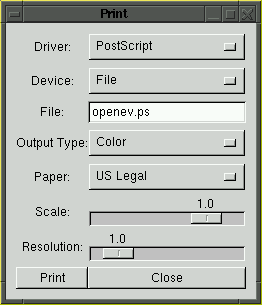

Printing Dialog
The OpenEV Print Dialog is used to capture the contents of a view for
printing, or other purposes.

- Driver: One of:
- PostScript: This is the only driver that supports the Paper and Scale
controls in order to control placement on a page. The Output Type: Greyscale
option should produce Level 1 PostScript that will work on any PostScript
print.
- TIFF: Produces an RGB or Greyscale TIFF file. The resulting file is
not georeferenced.
- PNG: Produces an RGB or Greyscale PNG file suitable for web publishing.
- Windows Print Driver: Prints via an installed MS Windows print driver.
In this case the Print button leads to a dialog for selection of a specific
driver, and control of other printer options. The image will always be
printed as large as possible given the selection of paper type.
- Device: Select whether the resulting output is spooled directly
to the printer or saved to a file. This option is always File for PNG and
TIFF, and always Spool To Printer for Windows Print Driver. PostScript may
be spooled, or directed to a file.
- File/Command: If the Device is File this is the name of a file
to save the print to. If it is Spool to Printer this will be a command to
be used to spool to the printer. The PostScript text will be directed to
the standard input of the indicated command.
- Output Type: Either Greyscale or Color to control the type of
output produced.
- Paper: (PostScript only) Select the paper size. This is used
to establish size and positioning of the view.
- Scale: (PostScript only) Modifies the scale at which the print
is produced. A value of 0.5 would cause the view to be 50% the normal size,
but still centered on the paper.
- Resolution: The resolution at which the current view will be
rendered for output. A value of 2.0 would cause the view to be internally
rendered at double the resolution of the screen display for output.